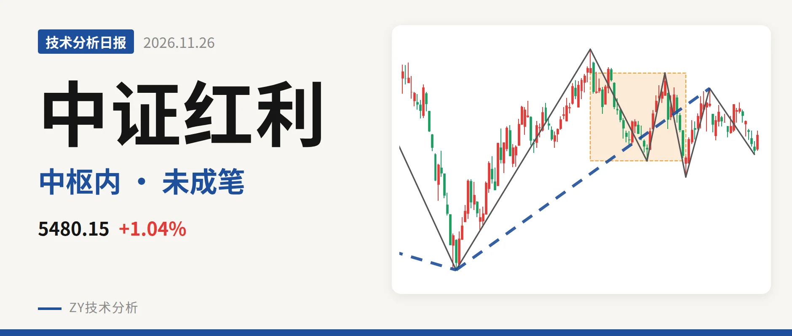
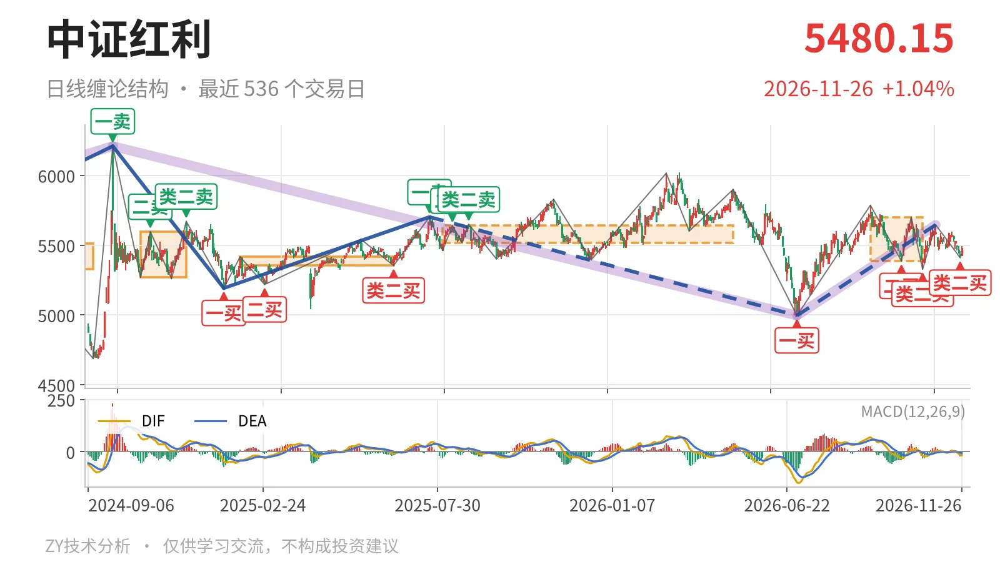
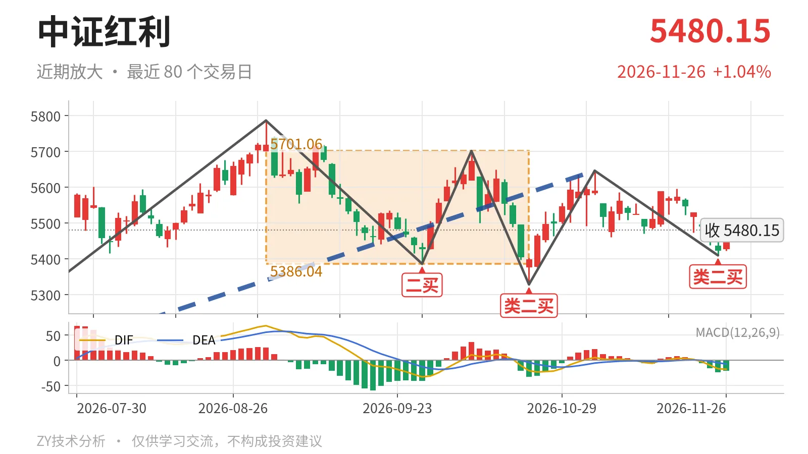

中证红利｜反弹未成笔，5386点仍在拉锯

最近日线中枢 5386.04—5701.06点，收盘位于中枢之内
一句话：价格收回5386点上方，日线反弹未成笔，处中枢震荡。
📐 走势结构：更大级别上涨段未结束，日线仍属线段内回落
当前更大级别处在6月30日以来的上涨段中，该段还没有结束。6月30日低点4995.49点至11月4日高点5646.01点，上涨约13.0%；上方2025年7月23日日线一卖5702.03点尚未被收复，因此这一上涨段仍只能按反弹处理。日线线段上，6月30日至11月4日的上涨线段还在延续，11月4日以来的下跌笔只是该线段内部回落，没有破坏线段结构。

🧭 中枢与位置：5480点回到未完成中枢内侧
最新收盘5480.15点已回到最近日线笔中枢内部。该中枢为9月1日至10月23日形成的5386.04—5701.06点，尚未完成，中轴5543.55点。现价距下沿约94点、距上沿约221点，位置更靠近中枢下沿。前一个日线笔中枢2025年8月4日至2026年4月30日为5518.46—5639.99点，现价低于其下沿5518点，且中枢中轴从5579.23点下移至5543.55点，中枢有所下移。
📍 买卖点：11月25日类二买未破，反弹未成笔
11月25日日线类二买落在5409.40点，之后价格未再创新低。该买点所在11月4日至11月25日下跌笔已经结束；11月26日最高5494.16点、最低5422.84点，只有一根K线，还未形成新的上涨笔。11月25日低点较10月23日类二买5328.30点抬高约81点，下方支撑略强；若后续跌破5409点，该买点只对应更小级别。

⚡ 背驰：下跌笔绿柱收敛，低点抬高
11月4日至11月25日下跌笔与9月1日至9月29日下跌笔相比，动能明显收敛。后者绿柱面积561、DIF低点-32.7；前者绿柱面积56、DIF低点-16.6。价格低点由5386.04点抬至5409.40点，绿柱面积大幅缩小、DIF低点同步抬高，属于低点抬高后的力度衰减，不是新低不新弱。最新DIF为-17.6，仍在零轴下，日线反弹还没有扭转零轴下状态。
🔎 关键位置观察：5386点与5701点定强弱
当前结构进入最近中枢内的多空观察区，上下沿决定后续性质。若后续回落跌破5386点且反抽回不到该点上方，结构上构成三卖，日线回落将扩大。若重新站上5701点附近，则本次回落更可能只是中枢扩展，6月30日以来的上涨段未改。若在5409点上方形成新上涨笔，11月25日类二买结构延续；跌破5409点，该低点只对应更小级别。现价仍在中枢下半段、未收复前一个中枢下沿5518点，反弹未成笔，结构偏中性。
⚠️ 本文为基于公开行情数据的缠论技术结构记录，由程序自动计算并生成，仅供学习交流，不构成任何投资建议。市场有风险，投资需谨慎。